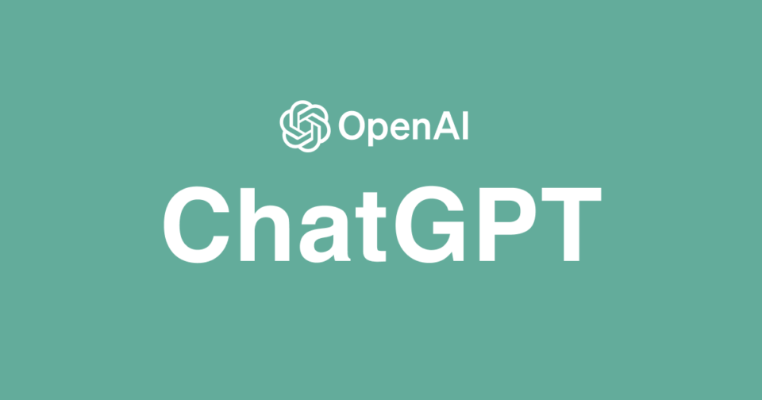
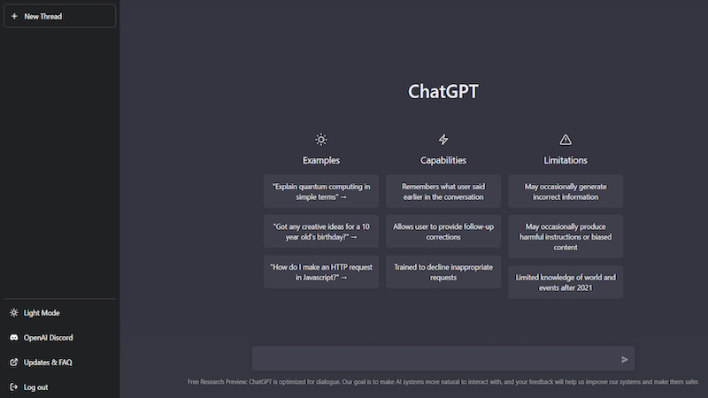

👤ChatGPT👤
Was ist ChatGPT
OpenAI's ChatGPT ist ein fortschrittlicher Sprach-KI-Assistent, der entwickelt wurde, um auf natürliche Weise mit Benutzern zu interagieren und ihnen bei einer Vielzahl von Aufgaben zu helfen. ChatGPT kann Fragen zu verschiedenen Themen beantworten, wie Allgemeinwissen, Wissenschaft, Geschichte, Kultur, Technologie und mehr. Darüber hinaus kann es Texte für verschiedene Zwecke erstellen, wie das Verfassen von Briefen, das Schreiben von Artikeln oder das Generieren von kreativen Inhalten.
Ein weiterer Vorteil von ChatGPT besteht darin, dass es bei der Lösung von Problemen helfen kann. Es kann Ratschläge geben, Anleitungen bereitstellen oder bei der Erklärung komplexer Konzepte unterstützen. Wenn man sprachliche Unterstützung benötigt, kann ChatGPT helfen, indem es Vorschläge und Anregungen zum Verfassen von Texten, zur Korrektur von Grammatik oder zur Wahl der richtigen Ausdrücke liefert.
Ein besonderes Merkmal von ChatGPT ist seine Fähigkeit, als Konversationspartner zu dienen. Man kann mit ihm in einen Dialog treten, indem man sich mit ihm unterhalten und über verschiedene Themen diskutieren kann.

Wie funktioniert ChatGPT?
ChatGPT wurde mit großen Mengen an Texten trainiert und kann daher menschenähnliche Konversationen führen. Es verwendet ein neuronales Netzwerk, das aus vielen Schichten von künstlichen Neuronen besteht. Diese Neuronen sind in der Lage, komplexe mathematische Berechnungen durchzuführen, um menschliche Sprache zu verstehen und zu generieren.
Wenn man mit ChatGPT spricht, analysiert es Aussagen, um den Kontext und die Bedeutung zu verstehen. Es verwendet eine Technologie namens "Attention", um wichtige Wörter und Phrasen in deinen Aussagen zu identifizieren. Dann generiert es eine Antwort, die auf dem Kontext und der Bedeutung basiert.
ChatGPT kann auch auf spezifische Themen trainiert werden, um bessere Antworten zu generieren. Zum Beispiel kann es auf spezifische Themen wie Medizin, Finanzen oder Technologie trainiert werden. Dies ermöglicht es ChatGPT, bessere Antworten zu generieren, die auf dem spezifischen Thema basieren.

Was sind die Grenzen von ChatGPT und worauf sollte man bei der Verwendung achten?
Bei der Verwendung von ChatGPT sollten bestimmte Grenzen und Einschränkungen berücksichtigt werden. Obwohl ChatGPT über beeindruckendes Sprachverständnis und Wissen verfügt, besteht dennoch die Möglichkeit von Missverständnissen oder Fehlinterpretationen. Es kann Schwierigkeiten haben, den Kontext angemessen zu erfassen und Nuancen in der Bedeutung von Sätzen zu verstehen. Es ist wichtig zu beachten, dass ChatGPT Text basierend auf den Daten generiert, mit denen es trainiert wurde. Wenn diese Daten ungenau oder fehlerhaft sind, können auch die Antworten des Modells ungenau oder irreführend sein. Daher sollte man die bereitgestellten Informationen kritisch hinterfragen und verifizieren.
Es ist wichtig zu verstehen, dass ChatGPT keine eigene Urteilsfähigkeit oder ethische Grundlage besitzt. Daher können die generierten Antworten zwar sprachlich korrekt sein, aber dennoch unethisch, diskriminierend oder gesellschaftlich unangemessen sein. Als Benutzer ist es unsere Verantwortung, die generierten Antworten kritisch zu bewerten und gegebenenfalls die ethischen Implikationen zu berücksichtigen.
Es ist auch zu beachten, dass ChatGPT auf Trainingsdaten basiert, die bis zu einem bestimmten Zeitpunkt gesammelt wurden. Das Modell verfügt nicht über Informationen zu Ereignissen oder Entwicklungen, die nach dem Trainingszeitpunkt stattgefunden haben. Daher können aktuelle oder spezifische Informationen möglicherweise nicht korrekt oder vollständig wiedergegeben werden.
Es ist von großer Bedeutung zu betonen, dass ChatGPT nicht als Ersatz für professionelle Beratung oder Expertise in Bereichen wie Recht oder Medizin verwendet werden sollte. Es kann allgemeine Informationen liefern, jedoch sollten spezifische rechtliche oder medizinische Fragen von qualifizierten Fachleuten beantwortet werden.